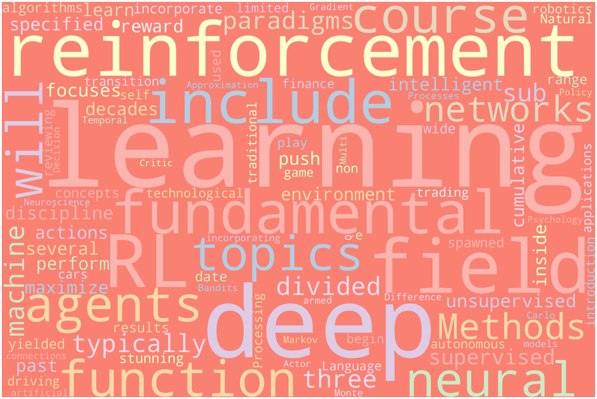
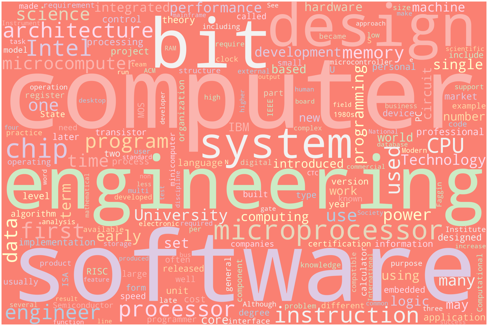
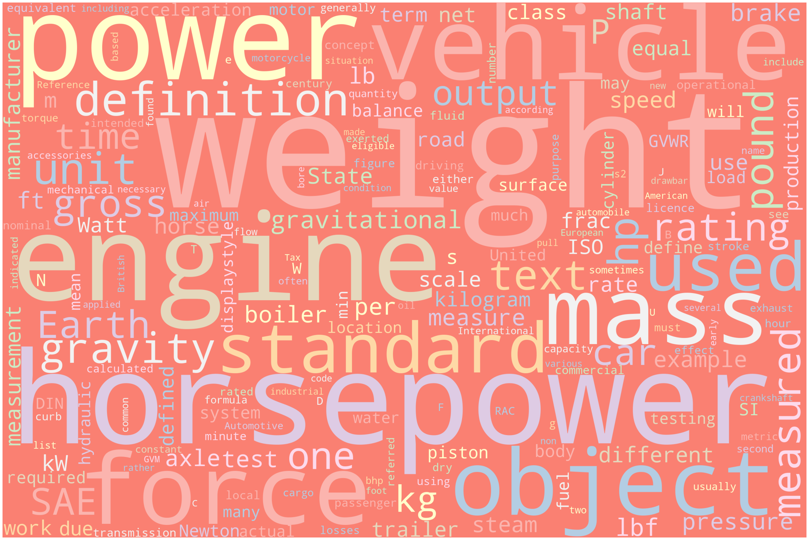
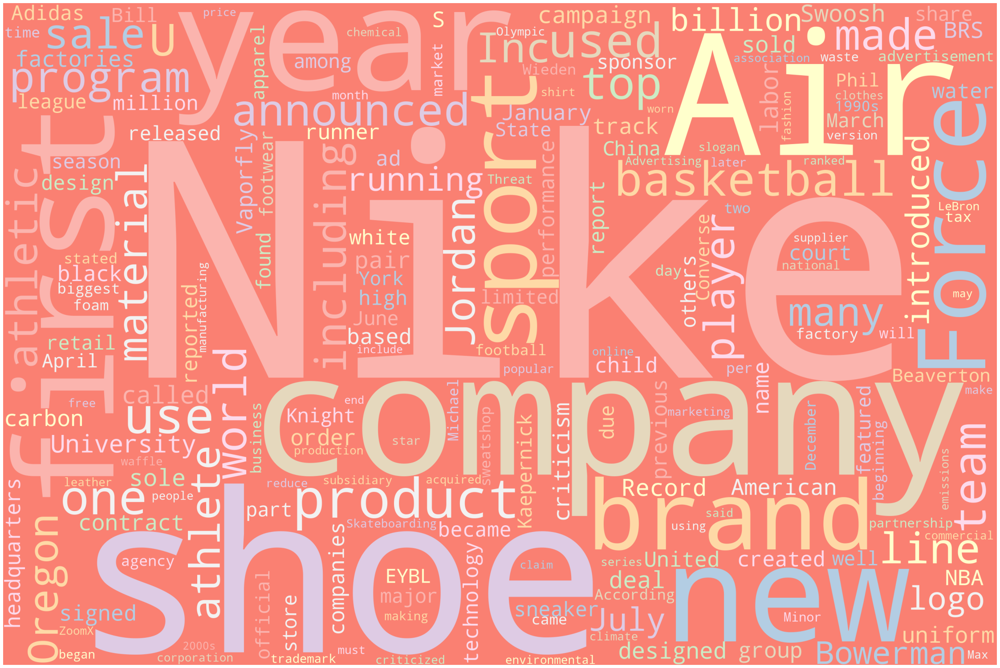

API_KEY='e5fb283476a34988a2f2358c58a08d0e'Lab-2.1: Assignment
Gathering text data with an API
IMPORTANT: The lab shown here (on the website) is just an HTML version, included for reference. To download the assignment, please navigate to the Labs tab in the Share-point dropdown menu in the website’s navigation bar. The relevant assignment can be determined from the folder’s name, click on the three dots & select download to get the assignment.
NOTE: It is recommended that you complete this .ipynb file in VS-code.
Submission:
- Export the completed assignment to HTML or PDF (preferably with Quarto) and upload it to Canvas.
- The final uploaded version should NOT have any code-errors present
- All outputs must be visible in the uploaded version, including code-cell outputs, images, graphs, etc
Assignment-1:
- Read over the
News-API,Wikipedia API, andGoogle ScholarAPI sections in the lab-demonstration section, if you have not done so already. - Get an API key for the
News-API: see following link - Submission: Insert your API key below
Assignment-2:
- Use the provided
News-APIcode as a starting point - Select
THREErandom topics (e.g. Georgetown, Cats, Clouds) but choose whatever you like - Query the API to pull text data and store the results in three different dictionaries
- Extract the
titleanddescriptiontext and store for later processing (up to you how you do this) - Clean the text as needed
import requests
import json
import re
import pandas as pd
from sklearn.feature_extraction.text import CountVectorizer#Lambda handler function for API calls.
def lambdaHandler(topic):
baseURL = "https://newsapi.org/v2/everything?"
total_requests=2
verbose=True
TOPIC = topic
URLpost = {'apiKey': API_KEY,
'q': '+'+TOPIC,
'sortBy': 'relevancy',
'totalRequests': 1}
# print(URLpost)
#GET DATA FROM API
response = requests.get(baseURL, URLpost) #request data from the server
print(response.url)
# print(response.url);
response = response.json()
#print(json.dumps(response, indent=2))
from datetime import datetime
timestamp = datetime.now().strftime("%Y-%m-%d-H%H-M%M-S%S")
# SAVE TO FILE
with open(TOPIC + '-newapi-raw-data.json', 'w') as outfile:
json.dump(response, outfile, indent=4)
return response# Function to clean up strings
def string_cleaner(input_string):
try:
out=re.sub(r"""
[,.;@#?!&$-]+ # Accept one or more copies of punctuation
\ * # plus zero or more copies of a space,
""",
" ", # and replace it with a single space
input_string, flags=re.VERBOSE)
#REPLACE SELECT CHARACTERS WITH NOTHING
out = re.sub('[’.]+', '', input_string)
#ELIMINATE DUPLICATE WHITESPACES USING WILDCARDS
out = re.sub(r'\s+', ' ', out)
#CONVERT TO LOWER CASE
out=out.lower()
except:
print("ERROR")
out=''
return out# Function to clean up data before conversion
def cleaner(response):
article_list=response['articles'] #list of dictionaries for each article
article_keys=article_list[0].keys()
total_requests=2
verbose=True
print("AVAILABLE KEYS:")
print(article_keys)
index=0
cleaned_data=[];
for article in article_list:
tmp=[]
if(verbose):
print("#------------------------------------------")
print("#",index)
print("#------------------------------------------")
for key in article_keys:
#if(verbose):
#print("----------------")
#print(key)
#print(article[key])
#print("----------------")
#if(key=='source'):
#src=string_cleaner(article[key]['name'])
#tmp.append(src)
#if(key=='author'):
#author=string_cleaner(article[key])
#ERROR CHECK (SOMETIMES AUTHOR IS SAME AS PUBLICATION)
#if(src in author):
#print(" AUTHOR ERROR:",author);author='NA'
#tmp.append(author)
if(key=='title'):
tmp.append(string_cleaner(article[key]))
if(key=='description'):
tmp.append(string_cleaner(article[key]))
# if(key=='content'):
# tmp.append(string_cleaner(article[key]))
#if(key=='publishedAt'):
#DEFINE DATA PATERN FOR RE TO CHECK .* --> wildcard
#ref = re.compile('.*-.*-.*T.*:.*:.*Z')
#date=article[key]
#if(not ref.match(date)):
#print(" DATE ERROR:",date); date="NA"
#tmp.append(date)
cleaned_data.append(tmp)
index+=1
return cleaned_datadef dataF(cleaned_data, topic):
#Function to convert a cleaned data frame into a CSV file.
df = pd.DataFrame(cleaned_data)
print(df)
df.to_csv(str(topic) + 'cleaned.csv' ,index_label=['index','title','description'])if __name__ == "__main__":
#Creating dataframes for 3 different topics and storing them in CSV files.
topic = ["mango", "DOW" , "Watch"]
for i in topic:
a = lambdaHandler(topic=i)
b = cleaner(response=a)
dataF(b,i)Assignment-3:
- Use the provided
Wikipedia-APIcode as a starting point - For EACH
THREEof the random topics, create a word cloud for your cleanedtitleanddescriptiontext
import wikipediadef generate_word_cloud(my_text):
from wordcloud import WordCloud, STOPWORDS
import matplotlib.pyplot as plt
# exit()
# Import package
# Define a function to plot word cloud
def plot_cloud(wordcloud):
# Set figure size
plt.figure(figsize=(40, 30))
# Display image
plt.imshow(wordcloud)
# No axis details
plt.axis("off");
# Generate word cloud
wordcloud = WordCloud(
width = 3000,
height = 2000,
random_state=1,
background_color='salmon',
colormap='Pastel1',
collocations=False,
stopwords = STOPWORDS).generate(my_text)
plot_cloud(wordcloud)
plt.show()
text='The field of machine learning is typically divided into three fundamental sub-paradigms. These include supervised learning, unsupervised learning, and reinforcement learning (RL). The discipline of reinforcement learning focuses on how intelligent agents learn to perform actions, inside a specified environment, to maximize a cumulative reward function. Over the past several decades, there has been a push to incorporate concepts from the field of deep-learning into the agents used in RL algorithms. This has spawned the field of Deep reinforcement learning. To date, the field of deep RL has yielded stunning results in a wide range of technological applications. These include, but are not limited to, self-driving cars, autonomous game play, robotics, trading and finance, and Natural Language Processing. This course will begin with an introduction to the fundamentals of traditional, i.e. non-deep, reinforcement learning. After reviewing fundamental deep learning topics the course will transition to deep RL by incorporating artificial neural networks into the models. Topics include Markov Decision Processes, Multi-armed Bandits, Monte Carlo Methods, Temporal Difference Learning, Function Approximation, Deep Neural Networks, Actor-Critic, Deep Q-Learning, Policy Gradient Methods, and connections to Psychology and to Neuroscience.'
generate_word_cloud(text)
def print_info(wiki_page):
print("-------------------------")
print(wiki_page.title)
print(wiki_page.url)
print(wiki_page.sections)
if(verbose):
print(wiki_page.sections)
print(wiki_page.categories)
print(wiki_page.html)
print(wiki_page.images)
print(wiki_page.content)
print(wikipedia.summary(wiki_page.title, auto_suggest=False))
print(wiki_page.references)
print(wiki_page.links[0],len(page.links))
#--------------------------
# LOOP OVER COUNTRY AND TOPIC
#--------------------------
def wordcloudGen(list3, topic_list):
for i in list3:
text=''
#--------------------------
# USER INPUTS
#--------------------------
for topic in topic_list:
topic=topic+' in '+ i
print("topic = ",topic)
max_num_pages=2 #max num pages returned by wiki search
verbose=False
#--------------------------
#SEARCH FOR RELEVANT PAGES
#--------------------------
titles=wikipedia.search(topic,results=max_num_pages)
print("TITLES=",titles)
#--------------------------
#LOOP OVER TITLES
#--------------------------
num_files=0
for title in titles:
try:
page = wikipedia.page(title, auto_suggest=False)
print_info(page)
text = text + page.content
num_files+=1
except:
print("SOMETHING WENT WRONG:", title);
generate_word_cloud(text)if __name__ == "__main__":
list1=['computer science']
list2=['Car']
list3=['Nike']
topic_list = ['System Architecture', 'Microprocessor', 'Software Engineering']
topic_list2 = ['horsepower', 'weight']
topic_list3 = ['shoes', 'basketball']
wordcloudGen(list1, topic_list)
wordcloudGen(list2, topic_list2)
wordcloudGen(list3, topic_list3)
topic = System Architecture in computer science
TITLES= ['Computer architecture', 'Outline of computer science']
-------------------------
Computer architecture
https://en.wikipedia.org/wiki/Computer_architecture
[]
-------------------------
Outline of computer science
https://en.wikipedia.org/wiki/Outline_of_computer_science
[]
topic = Microprocessor in computer science
TITLES= ['Microcomputer', 'Microprocessor']
-------------------------
Microcomputer
https://en.wikipedia.org/wiki/Microcomputer
[]
-------------------------
Microprocessor
https://en.wikipedia.org/wiki/Microprocessor
[]
topic = Software Engineering in computer science
TITLES= ['Computer science and engineering', 'Software engineering']
-------------------------
Computer science and engineering
https://en.wikipedia.org/wiki/Computer_science_and_engineering
[]
-------------------------
Software engineering
https://en.wikipedia.org/wiki/Software_engineering
[]
topic = horsepower in Car
TITLES= ['List of production cars by power output', 'Horsepower']
-------------------------
List of production cars by power output
https://en.wikipedia.org/wiki/List_of_production_cars_by_power_output
[]
-------------------------
Horsepower
https://en.wikipedia.org/wiki/Horsepower
[]
topic = weight in Car
TITLES= ['Vehicle weight', 'Weight']
-------------------------
Vehicle weight
https://en.wikipedia.org/wiki/Vehicle_weight
[]
-------------------------
Weight
https://en.wikipedia.org/wiki/Weight
[]
topic = shoes in Nike
TITLES= ['Nike, Inc.', 'Air Force (shoe)']
-------------------------
Nike, Inc.
https://en.wikipedia.org/wiki/Nike,_Inc.
[]
-------------------------
Air Force (shoe)
https://en.wikipedia.org/wiki/Air_Force_(shoe)
[]
topic = basketball in Nike
TITLES= ['Nike, Inc.', 'Nike Elite Youth Basketball League']
-------------------------
Nike, Inc.
https://en.wikipedia.org/wiki/Nike,_Inc.
[]
-------------------------
Nike Elite Youth Basketball League
https://en.wikipedia.org/wiki/Nike_Elite_Youth_Basketball_League
[]

